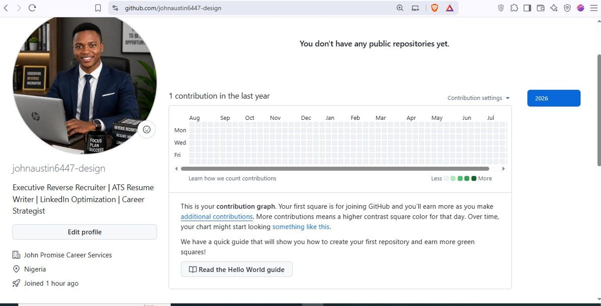

01
Executive Reverse Recruiting
Target-company research, opportunity matching, outreach strategy and proactive job-search support.
CAREER STRATEGY • EXECUTIVE REVERSE RECRUITING
I help professionals strengthen their career positioning, improve visibility, and pursue opportunities with a focused, proactive job-search strategy.

ABOUT
Many qualified professionals rely heavily on online applications and wait for the right employer to find them. My approach is different: I help candidates clarify their goals, strengthen their professional positioning, identify target employers, and build a more deliberate outreach strategy.
The goal is simple — connect your experience and value with opportunities that make sense for your next career move.
SERVICES
Target-company research, opportunity matching, outreach strategy and proactive job-search support.
Clear, achievement-focused resume positioning designed to communicate your value and improve search visibility.
Professional headline, About section, experience positioning and keyword strategy for a stronger presence.
A focused plan around target roles, industries, employers, positioning and practical next steps.
Preparation, positioning and feedback to help you communicate your experience with greater confidence.
Structured guidance as you refine your search, respond to opportunities and move through the process.
HOW IT WORKS
Understand your experience, goals, target roles and preferences.
Strengthen your resume, LinkedIn presence and professional story.
Research relevant employers and identify realistic opportunities.
Use a focused outreach and follow-up strategy to build conversations.
READY FOR YOUR NEXT MOVE?
CONTACT
Tell me about your target role, career goals and what you would like to improve.